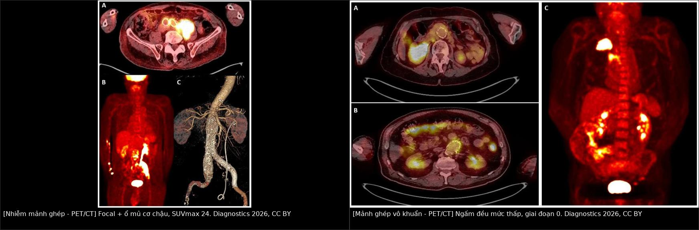
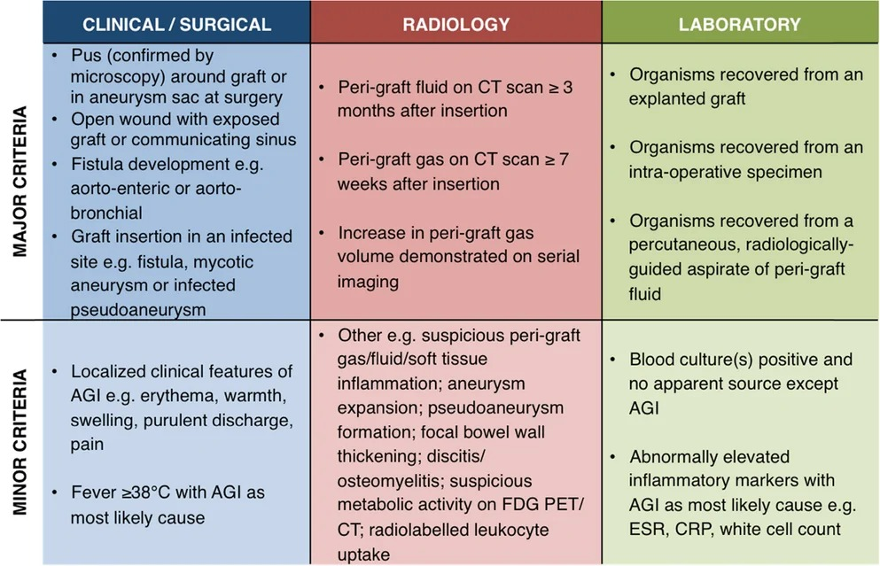
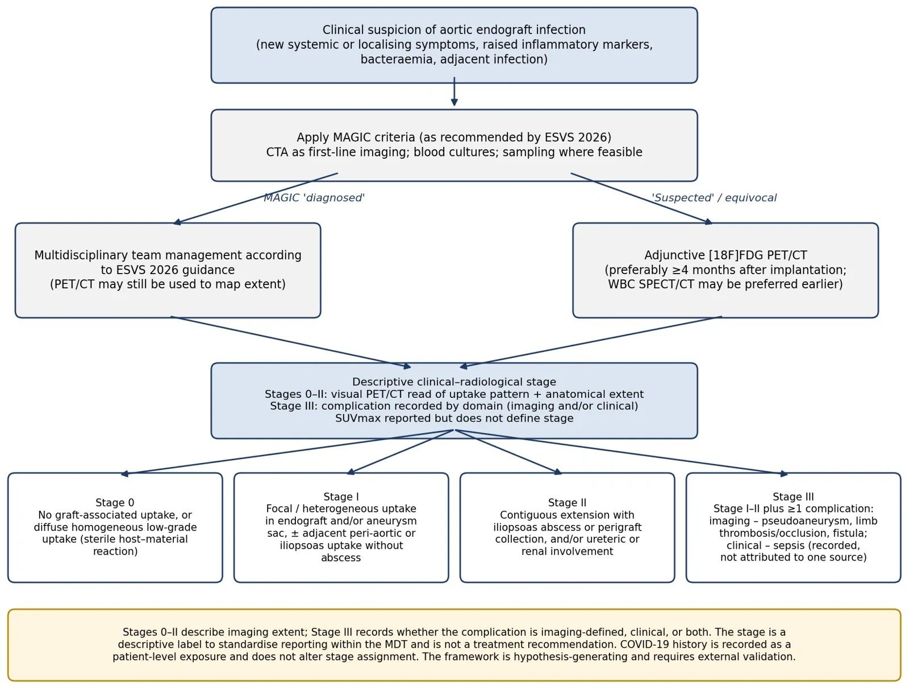
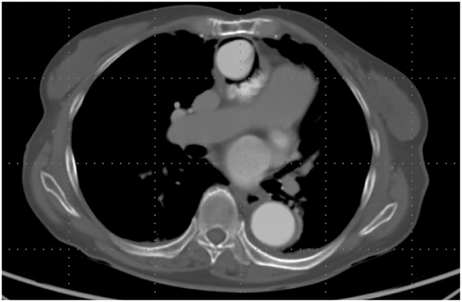
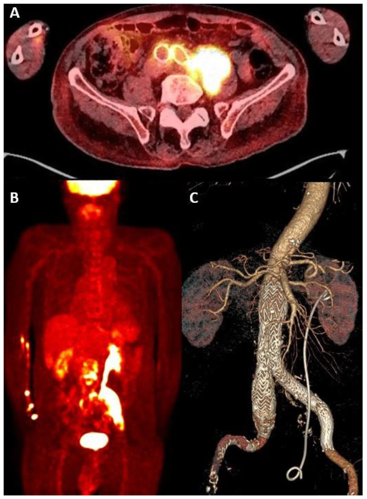
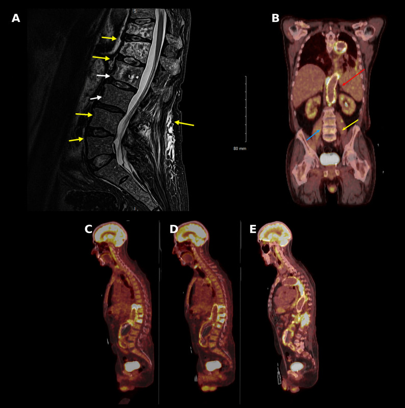

944 — Nhiễm mảnh ghép & stent-graft động mạch chủ–chậu / Aortic graft & endograft infection (VGEI)
Tags: pattern:khi-quanh-graft pattern:dich-quanh-graft vung:dong-mach-chu vung:o-bung score:MAGIC protocol:CTA protocol:PET-CT protocol:WBC-SPECT incidentaloma:khong
Mức chắc chắn (certainty): tổng hợp y văn (literature synthesis) — 1 loạt 129 bệnh nhân phẫu thuật vì nhiễm mảnh ghép (Open Forum Infect Dis 2026, PMC13339074, CC BY), 1 loạt 62 ca ghép lại tại chỗ (bovine vs Dacron tẩm rifampicin; Langenbeck's Arch Surg 2026, PMC13695657, CC BY), 1 loạt 30 ca điều trị kháng sinh duy trì (PMC13263525, CC BY), 1 loạt 11 ca PET/CT có khung phân độ (Diagnostics 2026, PMC13703720, CC BY) và 2 ca nguyên văn có ảnh (PMC13245323 CC BY-NC-ND; PMC13343333 CC BY). Nhóm không có bệnh nhân của mình; chỗ nguồn lệch nhau (ngưỡng SUVmax, thời điểm PET/CT) được ghi là mâu thuẫn nguồn, không chọn bừa.
Câu chốt: nhiễm mảnh ghép động mạch chủ (vascular graft and endograft infection, VGEI) là biến chứng hiếm nhưng tử vong 10–45%, chẩn đoán không bằng một dấu hiệu hình ảnh đơn lẻ mà bằng bộ tiêu chuẩn MAGIC 2016 kết hợp lâm sàng – hình ảnh – vi sinh. Bốn số phải thuộc: (1) tỉ lệ nhiễm 0,5–4% mảnh ghép nhân tạo, riêng stent-graft EVAR ~0,6% (0,4–0,8%) (PMC13339074, PMC13703720); (2) ngưỡng thời gian của MAGIC — khí quanh mảnh ghép ≥ 7 tuần và dịch quanh mảnh ghép ≥ 3 tháng sau cấy mới là tiêu chuẩn chính; sớm hơn là bình thường sau mổ; (3) tử vong 1 năm 43% trong loạt 129 ca, biến chứng nặng nhất là nhiễm khuẩn huyết + rò động mạch chủ–ruột (PMC13339074); (4) hình ảnh chỉ trả lời "có nhiễm hay không", còn "giữ hay lấy mảnh ghép" là quyết định của hội chẩn đa chuyên khoa dựa trên độ vững miệng nối, mức xâm lấn mô quanh mạch và khả năng phẫu thuật của bệnh nhân.
1. Tổng quan bệnh học – cơ chế hình ảnh
1.1 Vì sao mảnh ghép nhân tạo lại dễ nhiễm — và vì sao nhiễm lại dai dẳng
- Mảnh ghép Dacron/PTFE là vật lạ không có mạch máu. Sau cấy, bề mặt được phủ một lớp protein huyết tương + fibrin, rồi tế bào nội mạc chỉ phủ kín vài cm đầu từ hai miệng nối — phần còn lại không bao giờ nội mạc hóa hoàn toàn. Đây là "đất" cho Staphylococcus bám dính.
- Vi khuẩn bám và tạo màng sinh học (biofilm): trong biofilm, vi khuẩn chuyển sang kiểu hình ngủ, chuyển hóa thấp, được bao bởi ma trận polysaccharide. Hệ quả kép: (a) kháng sinh chỉ thấm được nồng độ thấp hơn MIC 10–1.000 lần; (b) bạch cầu không thực bào được → cấy máu âm tính ở một phần ba đến một nửa ca, và không có kháng sinh nào "chữa khỏi" khi còn vật lạ.
- Vì vậy phẫu thuật lấy mảnh ghép là cách chữa duy nhất, còn kháng sinh là bổ trợ hoặc duy trì suốt đời khi không mổ được. Loạt 25 bệnh nhân không mổ được: kháng sinh duy trì kiểm soát nhiễm ở 10/25 (40%), và trong 10 ca ngừng thuốc chỉ 6/10 (60%) không tái phát sau > 6 tháng (PMC13263525). Nói cách khác: ngừng kháng sinh ở người còn mảnh ghép là đánh cược 40% tái phát.
- Đường vào: lây trong mổ (phần lớn), lan từ ổ nhiễm lân cận (áp-xe cơ chậu, viêm đốt sống–đĩa, nhiễm catheter), gieo rắc máu (nhiễm khuẩn huyết, viêm nội tâm mạc, viêm tủy xương), nhiễm tại chỗ tiêm/chọc (tiêm cột sống, đặt stent qua da). Ca Coxiella của chúng tôi minh họa đường gieo rắc máu từ ổ nhiễm mạn tính với blood culture âm (PMC13343333).
1.2 TẠI SAO CT thấy khí — và TẠI SAO khí sớm lại bình thường
- Vật lý HU: khí có −1.000 HU, mô mềm 20–60 HU, mỡ −100 đến −40 HU, dịch 0–20 HU, thuốc cản quang trong lòng mạch 150–350 HU. Vì vậy "khí quanh mảnh ghép" là điểm đen tuyệt đối trong cửa sổ mô mềm, không nhầm với mỡ được.
- Sau mổ, khí còn lại trong khoang cấy được hấp thu dần: thực nghiệm và lâm sàng cho thấy khí quanh mảnh ghép sau 7 tuần là bất thường, còn dịch quanh mảnh ghép sau 3 tháng là bất thường — chính hai ngưỡng này được MAGIC đưa vào tiêu chuẩn chính (Hình MAGIC). Trước các mốc đó, khí/dịch không đủ để gọi nhiễm, và đây là cạm bẫy số 1 ở bệnh nhân mới mổ.
- TẠI SAO khí là dấu hiệu mạnh: khí sinh ra từ chuyển hóa kỵ khí và lên men của vi khuẩn trong ổ mủ kín. Khí tự do tăng thể tích theo thời gian trên các lần chụp liên tiếp — MAGIC ghi rõ "tăng thể tích khí quanh mảnh ghép trên các lần chụp" là tiêu chuẩn chính. Một túi khí không đổi trong 6 tháng ít có ý nghĩa hơn một túi khí to dần trong 3 tuần.
- TẠI SAO cần CTA chứ không chỉ CT thường: cần phân biệt giả phình/miệng nối hở (thuốc trong túi phình ở thì động mạch = endoleak) với ổ mủ quanh mảnh ghép (dịch không ngấm thuốc, có viền ngấm thuốc). Cùng một "khối quanh mạch", đậm độ theo thì quyết định bản chất.
1.3 TẠI SAO FDG PET/CT bắt được nhiễm — và TẠI SAO không có ngưỡng SUVmax dùng được
- Cơ chế: [18F]FDG là glucose tương tự, được đại thực bào và bạch cầu trung tính đã hoạt hóa cùng tế bào viêm bắt giữ qua GLUT-1/GLUT-3 với tốc độ tỉ lệ với cường độ viêm. Vì vậy FDG không đặc hiệu cho vi khuẩn: mọi phản ứng viêm — kể cả phản ứng chủ–vật liệu vô khuẩn — đều dương tính.
- Con số đối chứng: mảnh ghép không nhiễm có SUVmax trung vị 3,3 (IQR 2,0–4,2), mảnh ghép nhiễm có 5,7 (IQR 2,2–7,8) — hai khoảng chồng lấp gần hết. Nghiên cứu 21 ca gợi ý cắt điểm 6,3, và stent-graft EVAR "vô khuẩn" ở bệnh nhân ung thư có SUVmax trung bình 2,63 ± 0,48 ngay trong 1–4 tháng đầu (tất cả trích trong PMC13703720).
- Vì vậy ESVS 2026 kết luận: cắt điểm SUVmax không đáng tin; PET/CT chỉ là công cụ bổ trợ (Class IIa, Level B), và xạ hình bạch cầu WBC-SPECT/CT được ưu tiên hơn trong 4 tháng đầu sau mổ (Class IIb, Level C) vì phản ứng chủ–vật liệu ít gây dương tính giả với bạch cầu đánh dấu (PMC13703720).
- Điều dùng được trên PET/CT: kiểu ngấm (pattern) và mức lan (extent). Ngấm đều, mức thấp, dọc toàn bộ mảnh ghép = phản ứng vô khuẩn (giai đoạn 0); ngấm khu trú/không đồng nhất + ổ mủ lân cận = nhiễm. Trong loạt 11 ca, cả 5 mảnh ghép tham chiếu đều giai đoạn 0, 6/6 ca nhiễm là giai đoạn II–III, SUVmax mảnh ghép/túi phình ở ca nhiễm 6,0–16 (PMC13703720).
1.4 Dịch tễ – tiên lượng (số để nhớ)
| Chỉ số | Giá trị | Nguồn |
|---|---|---|
| Tỉ lệ nhiễm mảnh ghép nhân tạo | 0,5–4%; EVAR ~0,6% (0,4–0,8%) | PMC13339074, PMC13703720 |
| Thời điểm hay gặp | < 4 tháng ở 57%; đa số trong 2 năm đầu, nhưng có ca 14 tháng sau EVAR và 1 năm triệu chứng trước chẩn đoán | PMC13339074, PMC13703720, PMC13343333 |
| Vị trí | 85% ngoài khoang (chi, cổ, bẹn); 15% trong khoang ngực/bụng | PMC13339074 |
| Vi khuẩn | đa khuẩn 49%; S. aureus 16%; Candida 27,8% và gắn với rò động mạch chủ–ruột thứ phát (p = 0,003) | PMC13339074, PMC13695657 |
| Tử vong | chu phẫu 10–45%; tại 1 năm 43% (tuổi > 75 và nhập ICU là yếu tố độc lập) | PMC13339074 |
| Cắt cụt chi | 10–30%; tái nhiễm 6–27% | PMC13339074 |
| Thất bại điều trị sau ghép lại tại chỗ | Dacron tẩm rifampicin 4/41 (9,8%) vs màng ngoài tim bò 0/21, tử vong viện 19,5% vs 14,3% | PMC13695657 |
| Kháng sinh duy trì khi không mổ được | kiểm soát nhiễm 40%; ngừng thuốc 6/10 không tái phát sau > 6 tháng | PMC13263525 |
2. Mẫu hình + chẩn đoán phân biệt theo vị trí (gamut)
- Theo mẫu hình hình ảnh:
- Khí quanh mảnh ghép (đơn độc hoặc trong ổ dịch) → nhiễm là chính; phân biệt khí còn lại sau mổ (< 7 tuần), khí trong rò động mạch chủ–ruột (bài 938).
- Dịch/khối quanh mảnh ghép → ổ mủ, tụ máu, lymphocele, phản ứng viêm; phân biệt bằng đậm độ, viền ngấm thuốc, thời gian.
- Giả phình ở miệng nối kèm khí/dịch → giả phình nhiễm (mycotic pseudoaneurysm); phân biệt endoleak vô khuẩn.
- Ngấm FDG khu trú → nhiễm; ngấm đều mức thấp → phản ứng chủ–vật liệu.
- Lan ra mô lân cận: áp-xe cơ chậu, viêm đốt sống–đĩa, dò vào ruột/phế quản/niệu quản — đây là các "dấu chỉ điểm" làm chẩn đoán chắc hơn nhiều.
- Theo vị trí giải phẫu:
- Động mạch chủ lên/quai: mảnh ghép phẫu thuật; khí quanh mảnh ghép ở trung thất, dễ nhầm khí trung thất sau mổ; rò ra phế quản gây ho ra máu (tiền triệu chảy máu — tìm dấu hiệu trên CTA).
- Động mạch chủ ngực xuống (TEVAR): khí/dịch quanh stent; rò ra thực quản là biến chứng chết người (bài 1844).
- Động mạch chủ bụng dưới thận (EVAR/ghép mở): hay gặp nhất; khí ≥ 7 tuần, dịch ≥ 3 tháng; lan ra cơ chậu và cột sống thắt lưng.
- Động mạch chậu – bẹn – chi dưới: mảnh ghép ngoài khoang, hay gặp 85%; dễ thấy khối sưng, rò mủ ở bẹn, và giả phình miệng nối.
- Cầu nối ngoài giải phẫu (axillo-bifemoral, fem-fem): đường đi dưới da → nhiễm biểu hiện đỏ da, rò mủ dọc đường ống, rất dễ thấy trên lâm sàng.
- Bắt chước quan trọng nhất: endoleak vô khuẩn (thuốc trong túi phình, không khí, không dịch) và phản ứng chủ–vật liệu (ngấm FDG đều, mức thấp). Gọi nhầm hai thể này là nhiễm → mổ lấy mảnh ghép oan ở bệnh nhân vừa mổ tim mạch.
3. Bảng so sánh phân biệt (ma trận đối chiếu)
| Thực thể (entity) | Hình ảnh điển hình (CTA / PET-CT / MRI) | Chốt vào (rule-in) | Chốt loại (rule-out) | Gợi ý xác nhận |
|---|---|---|---|---|
| Nhiễm mảnh ghép (VGEI) | Dịch quanh mảnh ghép ≥ 3 tháng, khí ≥ 7 tuần hoặc tăng thể tích khí; viền ngấm thuốc; FDG khu trú/không đồng nhất | Khí muộn/tăng dần + dịch muộn + ngấm FDG khu trú + cấy máu dương | Khí < 7 tuần, dịch < 3 tháng, ngấm FDG đều mức thấp → chưa gọi nhiễm | MAGIC; cấy máu 3 bộ; chọc hút dưới CT; mcfDNA; hội chẩn |
| Phản ứng chủ–vật liệu vô khuẩn | Ngấm FDG đều, đồng nhất, mức thấp dọc mảnh ghép; không khí, không dịch, không ổ mủ; SUVmax ~2,6 (1–4 tháng đầu) | Ngấm đều + không có dấu CT cấu trúc + không triệu chứng | Có khí muộn / dịch muộn / ổ mủ / SUVmax tăng theo thời gian → nhiễm | So sánh lần chụp trước; WBC-SPECT/CT nếu < 4 tháng |
| Endoleak vô khuẩn | Túi phình đầy thuốc ở thì động mạch (type I/II/III), không khí, thành túi đều; FDG không khu trú | Thuốc trong túi = endoleak; bệnh nhân không sốt, CRP bình thường | Dịch + khí + FDG khu trú cùng chỗ → nhiễm hóa túi phình | CTA 3 thì; so sánh kích thước túi; siêu âm cản quang |
| Giả phình nhiễm (mycotic) | Túi phình bờ không đều, không lớp vôi, khí trong thành, phù mô quanh, FDG mạnh; thường sau nhiễm huyết | Túi + khí + phù quanh + cấy máu dương | Lớp vôi liên tục, bờ nhẵn, không khí → phình xơ vữa không nhiễm | CTA mỏng 1 mm; cấy máu; không chọc |
| Rò động mạch chủ–ruột (AEF) | Khí trong lòng túi + mất liền lục thành ruột tiếp giáp, ruột dính ĐMC, máu trong ruột | Xuất huyết tiêu hóa + bóng khí trong thành + dính ruột | Khí chỉ ngoài thành, không dính ruột → nhiễm đơn thuần | Nội soi thận trọng; CTA; bài 938 |
| Viêm đốt sống–đĩa lan từ mảnh ghép | Phù tủy xương ≥ 2 đốt liền kề + đĩa, MRI STIR sáng, áp-xe cơ chậu cùng bên; FDG dọc mảnh ghép ra sau | Phù tủy + đĩa + phù cạnh sống cùng bên mảnh ghép | Thoái hóa đĩa (Modic) không phù cạnh sống, không ổ mủ | MRI STIR + T1 sau tiêm; cấy sinh thiết đốt sống; bài 222 |

*Trái: nhiễm — ổ ngấm FDG khu trú ở mảnh ghép/túi phình và áp-xe cơ chậu trái (SUVmax 24), kèm stent niệu quản. Phải: vô khuẩn — ngấm đều, đồng nhất, mức thấp dọc mảnh ghép (giai đoạn 0). Cả hai từ Diagnostics 2026, CC BY. Ảnh ghép letterbox, giữ nguyên tỷ lệ.*4. Protocol chụp + hệ phân độ/điểm chuẩn hóa
4.1 Đường đi chẩn đoán (theo MAGIC 2016 + ESVS 2026)
- Bước 1 — CTA là hình ảnh đầu tay (ESVS 2026): lát ≤ 1 mm, 3 thì (không thuốc, động mạch, tĩnh mạch muộn), cửa sổ mô mềm và xương. Không dùng CT không cản quang đơn thuần vì không phân biệt được ổ mủ với endoleak.
- Bước 2 — cấy máu 3 bộ trước kháng sinh, cấy dịch ổ mủ/vết thương; nếu cấy máu âm mà vẫn nghi: chọc hút dịch quanh mảnh ghép dưới CT (chỉ khi không có chỉ định mổ ngay) hoặc mcfDNA huyết tương (đã bắt được Coxiella burnetii trong ca PMC13343333 — nhưng phải xác nhận bằng huyết thanh/ PCR, không điều trị theo mcfDNA đơn thuần).
- Bước 3 — PET/CT khi MAGIC chỉ ở mức "nghi ngờ": ưu tiên WBC-SPECT/CT nếu < 4 tháng sau mổ; nếu PET/CT, đọc theo kiểu ngấm + mức lan, không dùng cắt điểm SUVmax.
- Bước 4 — hội chẩn đa chuyên khoa (phẫu thuật mạch, bệnh nhiễm, CĐHA, vi sinh) quyết định lấy mảnh ghép + ghép lại tại chỗ / cầu nối ngoài giải phẫu / kháng sinh duy trì.
4.2 Tiêu chuẩn MAGIC 2016 (bộ chuẩn duy nhất đang dùng)
- Ca "nghi ngờ" (suspected): 1 tiêu chuẩn chính hoặc 2 tiêu chuẩn phụ từ 3 nhóm khác nhau (lâm sàng/phẫu thuật, hình ảnh, xét nghiệm).
- Ca "chẩn đoán xác định" (diagnosed): ≥ 1 tiêu chuẩn chính + ≥ 1 tiêu chuẩn khác (bất kỳ nhóm nào).
- Tiêu chuẩn chính hay dùng trên hình ảnh: dịch quanh mảnh ghép ≥ 3 tháng sau cấy; khí quanh mảnh ghép ≥ 7 tuần; khí tăng thể tích trên các lần chụp. Tiêu chuẩn phụ hình ảnh: phù mô mềm quanh mảnh ghép, giãn túi phình, giả phình, dày thành khu trú, viêm đốt sống–đĩa, ngấm FDG khu trú, bắt xạ bạch cầu.
- Hình dưới là bảng MAGIC đầy đủ dùng trong bài — in ra dán ở buồng đọc:

Bảng MAGIC: 3 nhóm tiêu chuẩn (lâm sàng/phẫu thuật – hình ảnh – xét nghiệm), mỗi nhóm có tiêu chuẩn chính và phụ. Nguồn: Langenbeck's Arch Surg 2026, CC BY.4.3 Khung phân độ PET/CT mô tả (đề xuất 2026, chưa được thẩm định ngoài)
flowchart TD
A[Nghi nhiễm mảnh ghép: sốt, CRP tăng, đau, rò] --> B[CTA 3 thì + cấy máu 3 bộ]
B --> C{Đạt MAGIC chẩn đoán xác định?}
C -->|Có| D[Hội chẩn đa chuyên khoa: lấy mảnh ghép và ghép lại tại chỗ]
C -->|Nghi ngờ hoặc chưa rõ| E{PET-CT hay WBC-SPECT-CT?}
E -->|Dưới 4 tháng sau mổ| F[WBC-SPECT-CT ưu tiên]
E -->|Trên 4 tháng| G[FDG PET-CT: đọc kiểu ngấm và mức lan, KHÔNG dùng cắt điểm SUVmax]
F --> H[Phân độ mô tả 0 đến III]
G --> H
H --> I[Giai đoạn 0: ngấm đều mức thấp, không khí không dịch]
H --> J[Giai đoạn I: ngấm khu trú trong mảnh ghép hoặc túi phình]
H --> K[Giai đoạn II: lan liên tục ra cơ chậu hoặc ổ dịch quanh mảnh ghép]
H --> L[Giai đoạn III: biến chứng - giả phình, huyết khối chi, rò, nhiễm khuẩn huyết]
I --> M[Theo dõi, tìm ổ nhiễm khác]
J --> N[Hội chẩn: kháng sinh dài hạn hoặc mổ]
K --> N
L --> O[Cấp cứu: mổ hoặc can thiệp cầm máu]

Sơ đồ nguyên văn của bài gốc: MAGIC 2016 → PET/CT bổ trợ → phân độ mô tả 0–III (không phải khuyến cáo điều trị). Nguồn: Diagnostics 2026, CC BY.4.4 Điều trị — ba lựa chọn và giá phải trả
| Chiến lược | Chỉ định thực dụng | Kết quả có nguồn |
|---|---|---|
| Lấy mảnh ghép + ghép lại tại chỗ (in situ) bằng màng ngoài tim bò hoặc Dacron tẩm rifampicin | bệnh nhân chịu được mổ, mô quanh mạch còn đủ để khâu | thất bại 0/21 (bò) vs 4/41 (9,8%); tử vong viện 14,3% vs 19,5% (PMC13695657) |
| Cầu nối ngoài giải phẫu (axillo-bifemoral) + cắt đoạn nhiễm | ổ nhiễm lan rộng, bẹn dơ, không khâu được vào mô viêm | dùng trong ca 6 của loạt PET/CT; nguy cơ huyết khối cầu nối và cắt cụt 10–30% |
| Kháng sinh duy trì suốt đời (suppressive antimicrobial therapy) | bệnh nhân quá yếu, từ chối mổ, hoặc nhiễm khuẩn trú ẩn không có ổ mủ | kiểm soát 40%; 6/10 ngừng thuốc không tái phát > 6 tháng; 32% có tác dụng phụ (PMC13263525) |
- Kháng sinh: khởi đầu theo cấy máu/cấy mô, sau đó theo kháng sinh đồ; thời gian tối thiểu 6 tuần đường tĩnh mạch khi đã lấy mảnh ghép, và suốt đời khi còn mảnh ghép. S. aureus và Candida là hai tác nhân phải nghĩ ngay khi có rò động mạch chủ–ruột.
5. Biến thể bình thường và cạm bẫy
- Khí quanh mảnh ghép < 7 tuần: bình thường. Đây là lỗi hay gặp nhất — gọi nhiễm cho bệnh nhân ngày thứ 10 sau mổ rồi đưa đi mổ lại. Ngược lại, khí xuất hiện muộn hoặc tăng thể tích thì gần như chắc chắn nhiễm.
- Dịch quanh mảnh ghép < 3 tháng: bình thường. Dịch giảm dần và không có viền ngấm thuốc dày là lành; dịch tăng hoặc có khí là nhiễm.
- FDG ngấm đều mức thấp dọc mảnh ghép là phản ứng vô khuẩn, đặc biệt trong 4 tháng đầu và ở bệnh nhân ung thư (SUVmax trung bình 2,63). Đừng đọc "mảnh ghép sáng" thành "mảnh ghép nhiễm".
- Cạm bẫy endoleak: thuốc trong túi phình ở thì động mạch là endoleak, không phải ổ mủ. Ổ mủ không ngấm thuốc, có viền; endoleak đầy thuốc toàn khối, mờ dần ở thì muộn.
- Cạm bẫy "thỏa mãn tìm kiếm": thấy khí quanh mảnh ghép rồi dừng lại — bỏ sót áp-xe cơ chậu và viêm đốt sống–đĩa cùng bên, là hai ổ nhiễm quyết định thời gian kháng sinh và đường mổ. Luôn cuộn hết cột sống và cơ chậu trên cùng bộ ảnh.
- Cạm bẫy kim loại: stent-graft gây giả ảnh dày (streak) và ngấm FDG giả do hiệu chỉnh suy giảm quanh sợi kim loại. Cần xem ảnh không hiệu chỉnh suy giảm trước khi gọi ngấm khu trú; CTA cần lát mỏng + tái tạo đa bình diện để nhìn miệng nối.
- Cạm bẫy vị trí: khí trong lòng túi phình (không phải trong thành) gợi ý rò động mạch chủ–ruột — tìm dính ruột, mất liền lục thành ruột, và hỏi xuất huyết tiêu hóa. Bỏ sót = tử vong trong vài giờ.
6. Tự lượng giá — Blind Quiz
Ca 1 — mờ mắt một bên ở người có mảnh ghép động mạch chủ

- Gợi ý lâm sàng: bệnh nhân có mảnh ghép động mạch chủ lên, nhập viện vì mờ mắt một bên, đau mắt, sốt.
- Câu hỏi: (1) Dấu hiệu chính quanh mảnh ghép là gì? (2) Ba chẩn đoán phân biệt cho khí quanh mảnh ghép? (3) Dấu hiệu nào chốt nguyên nhân của viêm nội nhãn nội sinh?
Bấm để hiện đáp án (findings + chẩn đoán)
- Dấu hiệu: túi khí quanh mảnh ghép động mạch chủ lên (điểm đen −1.000 HU sát thành mảnh ghép), thành mảnh ghép dày, không thấy endoleak trong túi.
- Chẩn đoán: nhiễm mảnh ghép động mạch chủ lên là nguồn gieo rắc gây viêm nội nhãn nội sinh (endogenous endophthalmitis) — mắt chỉ là "ngọn", ổ nhiễm thật nằm ở mảnh ghép.
- Vì sao chốt: S. aureus bám biofilm trên mảnh ghép → nhiễm khuẩn huyết liên tục → vi khuẩn bắt giữ ở mao mạch hắc mạc (dòng máu chậm, không có hàng rào máu–võng mạc phía hắc mạc) → ổ mủ nội nhãn. Khí quanh mảnh ghép ở bệnh nhân đã cấy ghép > 7 tuần là tiêu chuẩn chính của MAGIC.
- Phân biệt: (a) khí còn lại sau mổ (< 7 tuần); (b) rò động mạch chủ–ruột — khí trong lòng túi + dính ruột + xuất huyết tiêu hóa; (c) giả phình nhiễm — túi bờ không đều + phù mô quanh. Ca này cấy máu dương và ổ mủ mắt cùng tác nhân → chốt.
- Nguồn ảnh: Ann Thorac Surg Short Rep 2026, Fig. 1 — PMC13245323, CC BY-NC-ND; tác giả Eizawa S, Tanabe M, Tanaka H.
Ca 2 — sốt kéo dài, đau lưng sau EVAR 14 tháng

- Gợi ý lâm sàng: nam 78 tuổi, EVAR 14 tháng, sốt, sụt cân, đau lưng–hông trái; cấy máu âm.
- Câu hỏi: (1) Mô tả hai ổ ngấm FDG bất thường? (2) Ổ nào là "biến chứng" theo khung phân độ? (3) Vì sao cấy máu âm không loại trừ nhiễm?
Bấm để hiện đáp án (findings + chẩn đoán)
- Dấu hiệu: (A) ngấm FDG khu trú ở mảnh ghép và túi phình (SUVmax 11) và ổ ngấm rất mạnh ở cơ chậu trái (SUVmax 24) — áp-xe cơ chậu; (B) hình chiếu toàn thân cho thấy ổ mủ lan xuống; (C) CTA 3D có stent niệu quản (double J) do hẹp/đè ép niệu quản trái.
- Chẩn đoán: nhiễm mảnh ghép EVAR giai đoạn III (có biến chứng áp-xe cơ chậu + nhiễm khuẩn huyết), MAGIC mức "nghi ngờ" (2 tiêu chuẩn phụ ở 2 nhóm).
- Vì sao chốt: ngấm khu trú trong mảnh ghép + ổ mủ lân cận là dấu hiệu mạnh hơn bất kỳ cắt điểm SUVmax nào; SUVmax 24 ở cơ chậu là ổ mủ, không phải viêm cơ đơn thuần.
- Phân biệt: phản ứng vô khuẩn (ngấm đều, mức thấp, không ổ mủ); endoleak (thuốc trong túi, không ổ mủ); áp-xe cơ chậu do nguyên nhân khác (bài 1721, 222).
- Nguồn ảnh: Diagnostics 2026, Fig. 4 — PMC13703720, CC BY; tác giả Sultan S, Tasopoulou KM, Acharya Y và cs.
Ca 3 — đau lưng một năm, cấy máu âm, "không tìm ra ổ nhiễm"

- Gợi ý lâm sàng: nam 69 tuổi, đã sửa phình động mạch chủ ngực–bụng, đau lưng 1 năm, ớn lạnh vài tháng, dùng prednisone 5 mg/ngày; cấy máu và cấy mô đốt sống đều âm.
- Câu hỏi: (1) Dấu hiệu trên MRI và PET/CT? (2) Vì sao hai ổ này phải đọc cùng nhau? (3) Tác nhân nào gây bệnh cảnh "cấy âm, diễn tiến chậm"?
Bấm để hiện đáp án (findings + chẩn đoán)
- Dấu hiệu: (A) MRI STIR: phù tủy xương T10–L2, mất liền lục mặt khớp, đĩa bị tổn thương, lún T12 và L1, phù cạnh sống/cơ chậu — viêm đốt sống–đĩa đa tầng; (B) PET/CT: ngấm FDG dọc mảnh ghép ngực–bụng, lan ra mô cạnh sống T10–L4, áp-xe cơ chậu trái.
- Chẩn đoán: nhiễm mảnh ghép động mạch chủ ngực–bụng lan liên tục ra cột sống — tác nhân Coxiella burnetii (sốt Q mạn), được phát hiện bằng mcfDNA huyết tương sau khi cấy thường quy âm.
- Vì sao chốt: nhiễm mảnh ghép và viêm đốt sống–đĩa cùng bên là một ổ nhiễm liên tục, không phải hai bệnh; phù tủy + đĩa + phù cạnh sống loại trừ thoái hóa đĩa đơn thuần.
- Phân biệt: viêm đốt sống–đĩa do tụ cầu (cấy máu thường dương, diễn tiến cấp); di căn đốt sống (không phù đĩa, không ổ mủ cơ chậu); thoái hóa Modic (không phù cạnh sống, không ổ mủ). Coxiella gây bệnh âm thầm, cấy âm, huyết thanh là chuẩn chẩn đoán.
- Nguồn ảnh: Antimicrob Steward Healthc Epidemiol 2026, Fig. 1 — PMC13343333, CC BY; tác giả Jain A, Khalil S, Sohail MR và cs.
Bài liên quan chéo
- 938 — Rò động mạch chủ–ruột: biến chứng chết người, cùng bộ tiêu chuẩn MAGIC
- 939 — Rò động mạch chủ–tĩnh mạch chủ
- 942 — Rò động mạch chủ–niệu quản
- 920 — Nút mạch tiêu hóa: kiểm soát chảy máu khi chưa mổ được
- 1721 — Nhiễm khuẩn stent niệu quản: cùng nguyên lý biofilm trên vật lạ
- 222 — Viêm đốt sống–đĩa: ổ nhiễm liên tục hay đi kèm
- 1844 — Rò hoại tử thực quản do xạ: rò trung thất, cùng nhóm biến chứng chết người
- 935 — Tối ưu liều can thiệp nhi: nguyên lý ALARA khi chụp lặp lại
Ảnh
- Tên file theo quy ước
944_nhiem-graft_Modality_SourceID.jpg; nguồn + giấy phép từng ảnh trongimages/CREDITS.md. - Ảnh ghép đối chiếu
images/composite_nhiem-vs-vo-khuan.jpgtạo bằngtools/make_composite.py(letterbox nền đen, không crop, không kéo giãn), chỉ ghép ảnh CC BY. - Ảnh CC BY-NC-ND (PMC13245323) dùng nguyên bản, không đưa vào composite.
Không dùng để chẩn đoán độc lập khi chưa có người hướng dẫn.